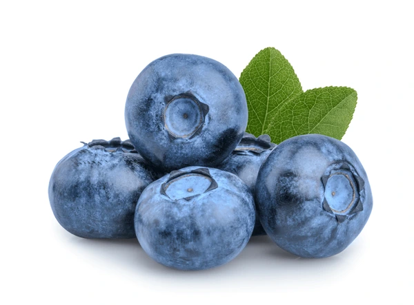
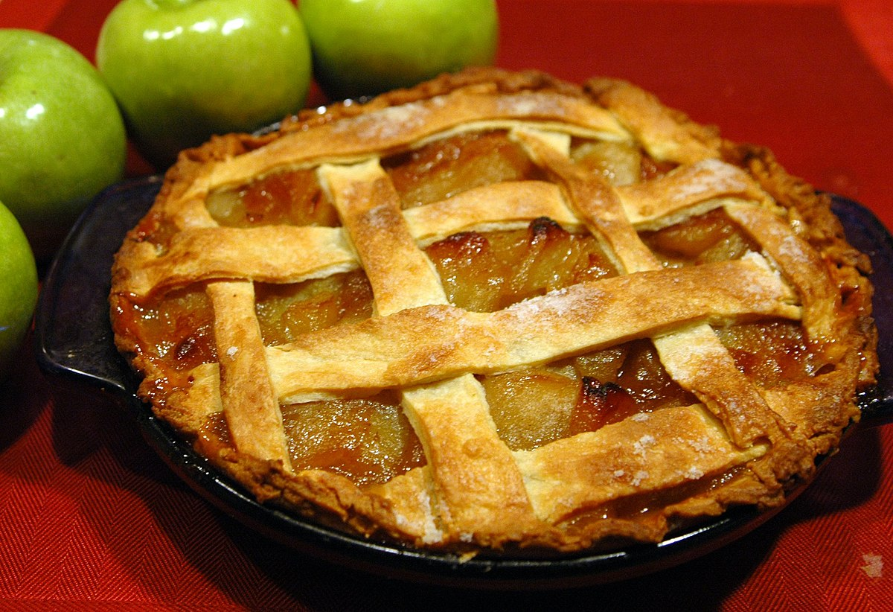
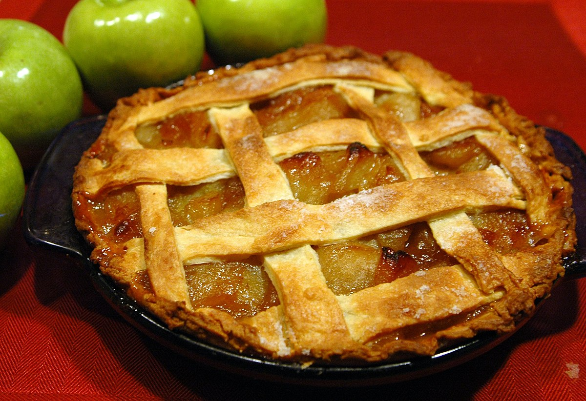

Fruit Pies:
Fruit pies are delightful desserts made with a variety of fresh or canned fruits, encased in a flaky pastry crust. Here's a guide to making a classic fruit pie:
Ingredients:
- 2 1/2 cups all-purpose flour
- 1 teaspoon salt
- 1 cup unsalted butter, chilled and cubed
- 1/2 cup ice water
- 4 cups mixed fruits (such as apples, peaches, berries, etc.)
- 3/4 cup granulated sugar
- 1/4 cup cornstarch
- 1 tablespoon lemon juice
- 1 teaspoon vanilla extract
- 1 egg, beaten (for egg wash)
- 1 tablespoon granulated sugar (for sprinkling)
Instructions:
1. Prepare the Pie Crust: Mix flour and salt in a large bowl. Add chilled butter cubes and blend until the mixture resembles coarse crumbs. Gradually add ice water until the dough forms. Divide into two portions, shape into discs, wrap in plastic wrap, and refrigerate for 30 minutes.
2. Prepare the Filling: In a separate bowl, combine mixed fruits, sugar, cornstarch, lemon juice, and vanilla extract. Mix until fruits are coated evenly.
3. Roll Out the Dough: Preheat oven to 375°F (190°C). Roll out one portion of dough on a floured surface to fit a pie dish. Transfer the dough to the dish and trim the excess.
4. Fill the Pie: Pour the fruit mixture into the prepared crust, spreading it evenly.
5. Top the Pie: Roll out the second portion of dough and place it over the filling. Seal and crimp the edges. Cut slits on top for ventilation. Brush with beaten egg and sprinkle with sugar.
6. Bake the Pie: Bake for 50-60 minutes, until the crust is golden and the filling is bubbly.
7. Cool and Serve: Let the pie cool for at least an hour before slicing. Serve with ice cream or whipped cream.

 
